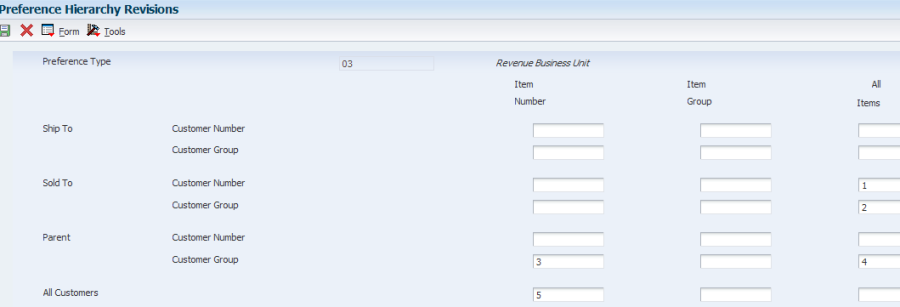
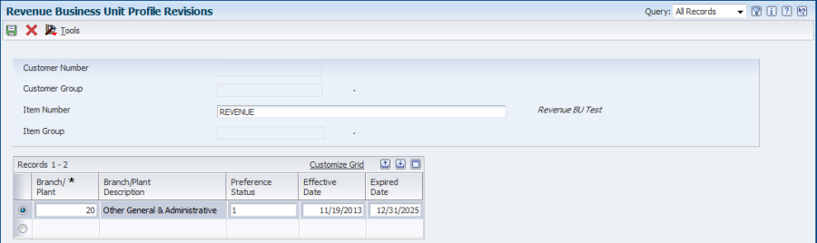
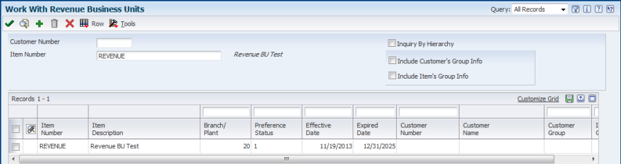
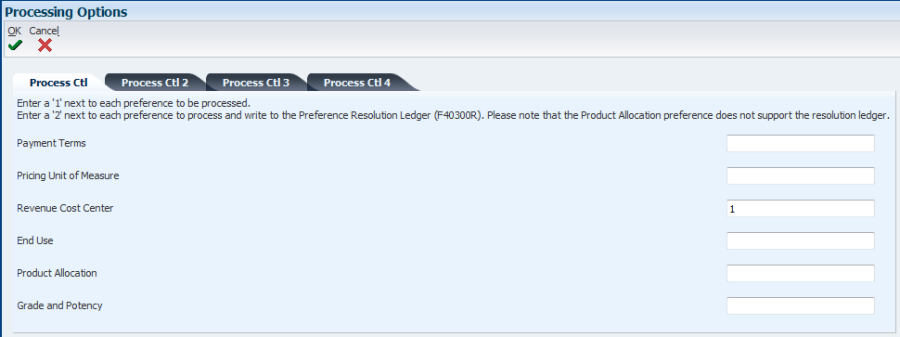
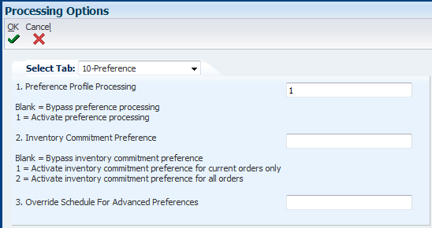
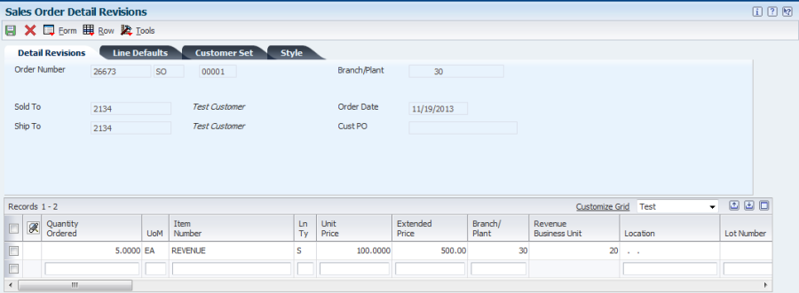
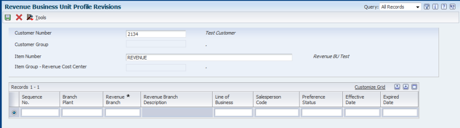

| Purpose |
| Scope |
| Details |
| Revenue Business Unit (Preference Type 03) |
| Setup (Menus G4231) |
| Example |
| Revenue Business Unit (Cost Center) (Preference Type 49) |
| Additional Information |
Overview
The Revenue Business Unit preference (Preference Type 03) is used when a cost center (business unit) other than the cost center on the Sales Order Header is needed for the revenue journal entries. The system uses the company of revenue business unit to fetch 4220 (COGS) and 4230 (Revenue) AAIs, not the header company.
The system will search through the preference hierarchy until it finds a match. The Header Cost Center (EMCU) field in the F4211 is loaded with the preference value.
Note: The Revenue Business Unit preference does NOT apply to interbranch or intercompany sales orders.
This document outlines the steps required to set up and apply the Revenue Business Unit Preference (Preference Type 03) and Revenue Business Unit (Cost Center) (Preference Type 49) at Sales Order Entry.
1. On menu G4231, select Preference Master (P40070). Inquire on the preference type and take the Row Exit to Preference Hierarchy (P40073).

2. To add the preference, the user can either take the Row Exit to Profiles (in Preference Master), or go directly to Work with Preference Master (P40303):

Note: The fields eligible for input in the header section are dependent on the hierarchy setup for this preference type.
In this case, the example is shown for “Item Only”, therefore only an Item Number is required.

Populate the Branch Plant field which will allow specifying the desired Revenue Business Unit to be populated in the EMCU field in F4211. For this example, we should expect the EMCU value to be populated with 20.
The Preference Status needs to be “1” in order to be considered active and also make sure that the effective date and expired date are populated as desired.

3. In a version of Preference Process Options (R40400), make sure that the Revenue Business Unit preference is activated by populating a “1”:

4. Once the preference record is created, Sales Order Entry (P4210) needs to have activated the preference profile so the proper value can be retrieved. In the Preference Tab of the Sales Order Entry (P4210) processing options, make sure Processing Option #1 is populated with a value of 1:

5. In the Versions Tab, make sure that the proper version of Preference Process Options (R40400) is populated in the Processing Option #6:

6. Since the main purpose of the Revenue Business Unit preference is to allow the EMCU field in the Sales Order Detail file (F4211) to be used in the Revenue Journal Entry, the 4230 DMAAI entry must have a blank cost center:

7. Lastly, Processing Option # 5 on the Default tab in Sales Update (R42800) must be blank:

In Sales Order Entry (P4210/P42101), at the moment the required data is populated, the system will resolve the preference and default the EMCU value specified in the preference:

After the order is processed through the Sales cycle, Sales Update (R42800) will create the Journal Entry for the Revenue DMAAI 4230 based on the EMCU value defaulted by the preference:

The Revenue Business Unit/Cost Center by Branch preference (P40349) offers more flexibility than the Revenue Business Unit preference by allowing more detailed criteria to be added to the preference. The rules of the Revenue Business Unit preference apply to this preference as well.
Note: In the version of Preference Process Options (R40400) used, make sure the "Revenue Cost Center (branch specific)" preference is activated by populating a "1" on the "Process Ctl 4" tab.
The added fields are the Sequence No., Revenue Branch, Line of Business, and Salesperson Code.

The Revenue Branch field is the actual value used to default into the sales order detail line (EMCU). The Branch Plant field (MCU alias) is used to tell the system that this preference applies to only specific Branch Plants or all Branch/Plants.
The Line of Business field is a preference key field used as additional search criteria for the preference. If this key field is left blank, the system applies the preference to all line of business values for the customers/items to which this preference applies.
The Salesperson Code field (used with Commissions) is a key field used as additional search criteria to select sales orders that match customers, items, and key fields defined with this preference. If this key field is left blank, the system applies the preference to all salesperson codes for the customers/items to which this preference applies. It is important to note that the Revenue Business Unit can only be fetched using the Salesperson Codes in the order header commissions (F42150) table. Entering different Salesperson Codes on the detail commissions (F42160) records will not cause the Revenue Business Unit to be fetched from the preference.
• Revenue Business Unit (Preference Type 03 and Preference Type 49) can be set up as Basic preferences only.
• The Revenue Business Unit preference does NOT apply to interbranch or intercompany sales orders.
• Revenue Business Unit (Cost Center) allows more flexibility with the added fields in the definition: Sequence No., Revenue Branch, Line of Business, and Salesperson Code.